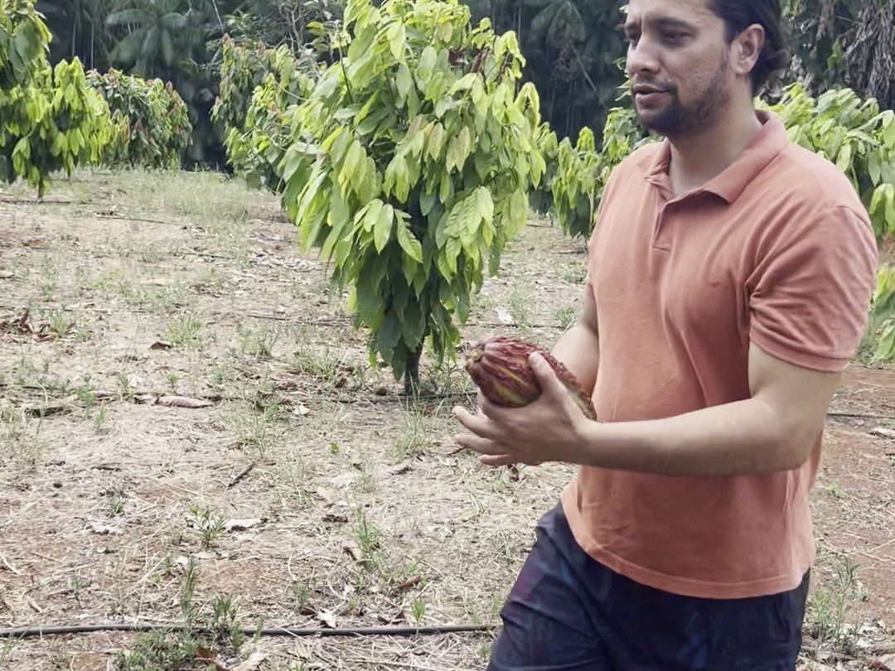
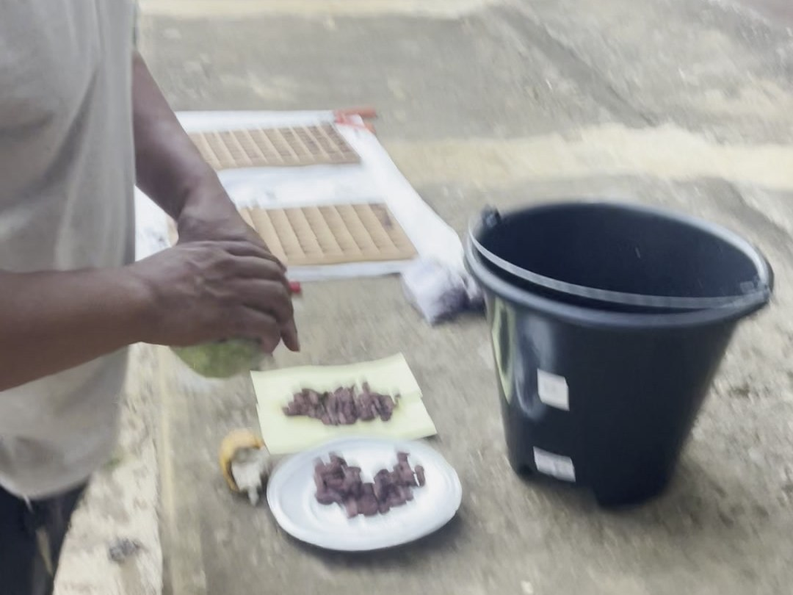
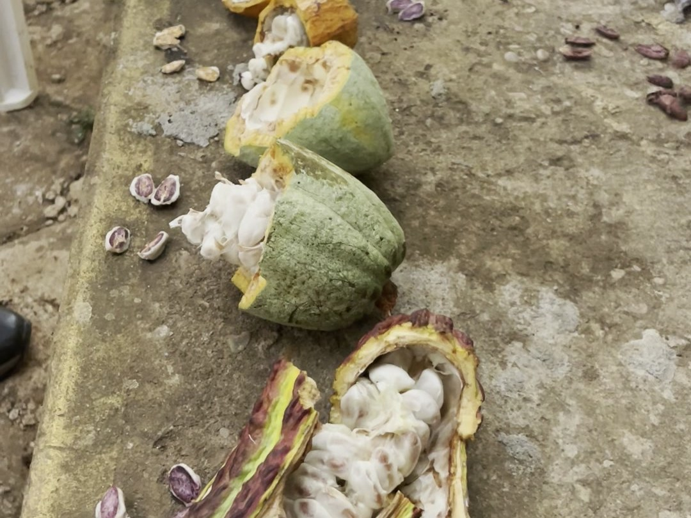
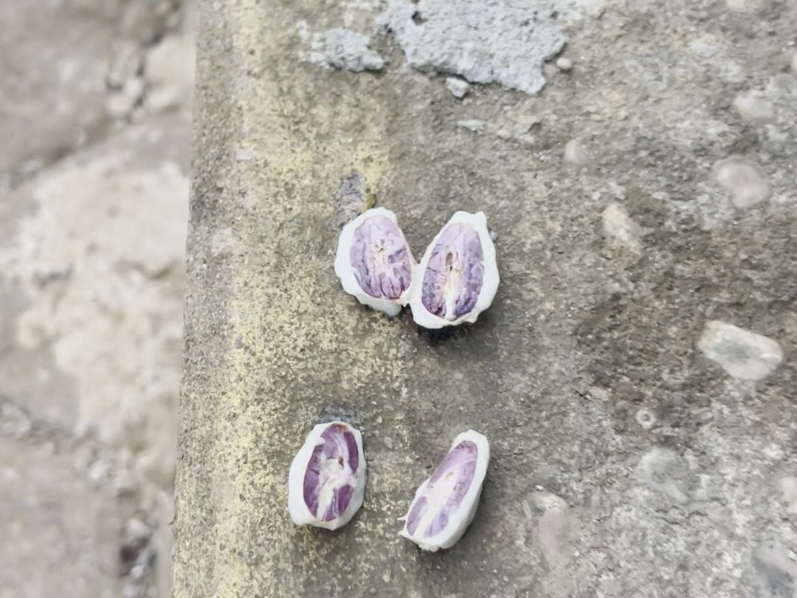

The first post was about the varieties on the tree, and how many of them the farm is still in the process of naming. This one is about what happens after the harvest — and a test so simple it fits in a bucket.
On the post-harvest bench in Pará, the lesson starts mid-sentence. “Quando a gente faz a imersão das amêndoas de cacau na água, as que estão melhores fermentadas, elas vão flutuar.” When we immerse the cacao beans in water, the better-fermented ones float. “As que estão menos fermentadas vão imergir.” The less-fermented ones sink. One bucket, one afternoon, a small-lot technique that separates only the best — “separar só as melhores para ter amêndoas mais fermentadas.”

The industry sorts by genetics. The farmer sorts by what floats.
The fine-chocolate industry sorts cacao by DNA: Nacional fraction, forastero, Criollo, the pedigree sheets that end up in tasting notes. The farmer sorts by what floats, what ferments, what fruits when. Both are real knowledge. Only one of them shows up in a bucket.
On the same bench, the varieties get hard to tell apart, and he says so plainly. “Precisamos estudar melhor, mas são variedades diferentes — esse é um C-151, esse é híbrido, e esse aqui são outras variedades que a gente precisa identificar, diferenciar.” We need to study more, but they are different varieties: this one is a C-151, this one is a hybrid, and these are others we still need to identify and tell apart. “É importante saber que são variedades diferentes.” It matters to know they are different.

The categories blur at the bench
Somewhere between the tree and the fermentation box, the tidy labels of the trade — fine, bulk, exotic, ordinary — stop holding. A pod opens and inside is pulp and potential, and a farmer who knows exactly which beans will float. The industry’s categories are useful for pricing. They are not the whole truth about the fruit.
Jedielcio de Jesus Oliveira works with CEPOTX, the cooperative that supplies our beans out of Altamira, Pará — the organic almonds that ship to Bahia for conversion — in a technical capacity, publicly listed as CEPOTX’s representative on the region’s cacao development committee, and one of the people the Agroverse lane is built on. He is also, separately, completing a master’s in Agronomy with a thesis on cocoa bean quality from this same region — the water test is the kind of thing that ends up in that research, not just in a blog post. It won’t appear in any fine-chocolate grading manual either way. It appears in a bucket on a farm that’s part of a 10,000-hectare bet that the Amazon can grow both trees and know-how.

Watch the field
The raw clips are short — a few seconds each — but they are the receipt for everything above. The water test, the sorting, the pod opening, the varieties on the bench.
The water test is not a substitute for a lab. It is better than nothing, and it is free, and it is what a farmer with a small lot can do with a bucket and an afternoon. “Boa aula, professor,” he says at the end of the lesson — good class, teacher. The compliment goes both ways.